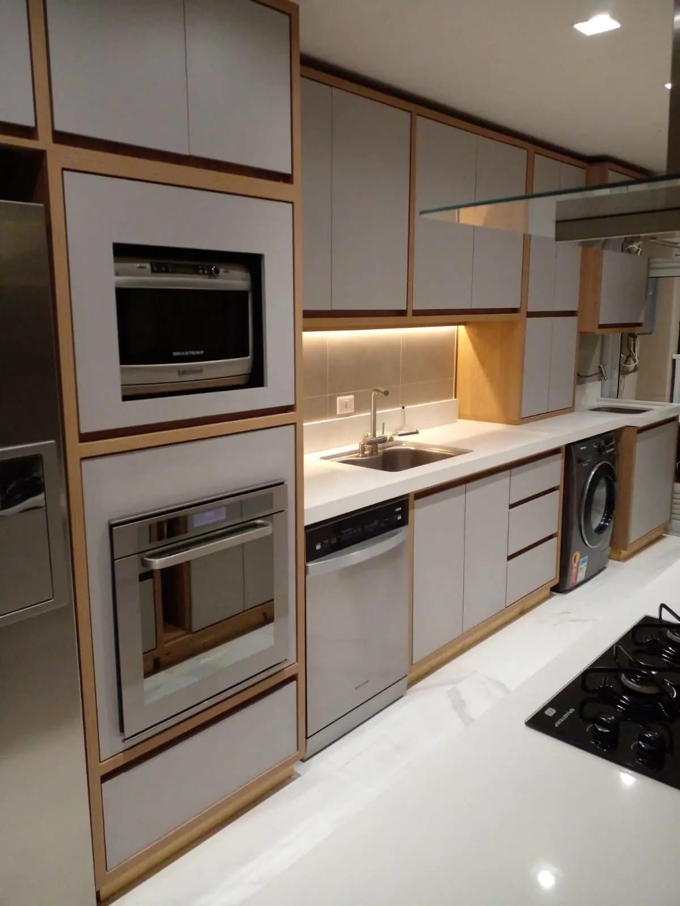

Cozinha Integrada Contemporânea
Focada em ergonomia e aproveitamento total de espaço, esta cozinha integra eletrodomésticos de embutir a um design clean. O contraste entre o acabamento branco e os tons amadeirados traz modernidade e aconchego ao coração da casa.